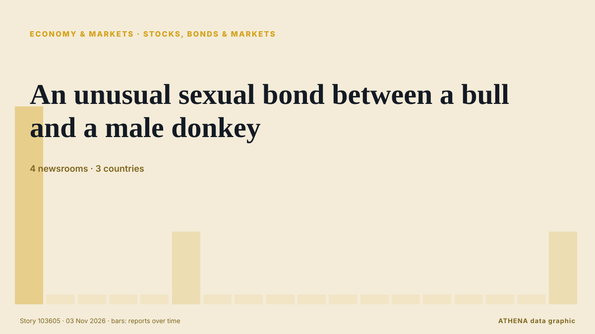

Stocks, bonds & markets
SponsoredPresented by  Cybernetics and Artificial Intelligence Lab Welcome to the Cybernetics and Artificial Intelligence Laboratory, established at the Department of Business Administration of the National
Cybernetics and Artificial Intelligence Lab Welcome to the Cybernetics and Artificial Intelligence Laboratory, established at the Department of Business Administration of the National
| 21 Oct | 0 |
|---|---|
| 22 Oct | 0 |
| 23 Oct | 0 |
| 24 Oct | 0 |
| 25 Oct | 0 |
| 26 Oct | 1 |
| 27 Oct | 0 |
| 28 Oct | 0 |
| 29 Oct | 0 |
| 30 Oct | 5 |
| 31 Oct | 3 |
| 1 Nov | 1 |
| 2 Nov | 11 |
| 3 Nov | 0 |

An unusual sexual bond between a bull and a male donkey
Sex between animals of the same sex is widespread in nature. from Phys.org
US stocks recover some of last week's sell-off after oil prices fall sharply
U.S. stocks are climbing Monday after oil prices eased back. from The Korea Times
Anthropic IPO outlook sharpens as revenue surges but compute costs raise new questions
Anthropic has given investors a much clearer look at the financial profile behind one of the most anticipated technology IPOs of the year. from FXStreet
Anthropic IPO: Sharesies among eight brokers chosen for Australian retail offer
Investors can't apply for shares until Anthropic releases an Australian prospectus. from BusinessDesk
Asian stocks mixed as tech sector struggles to rebound from selloff
Artificial intelligence (AI)-linked firms were hit by another wave of selling as Wall Street giants including Amazon, Alphabet and Microsoft signalled they would keep pouring money into data centres… from CNA (Channel NewsAsia)
Palantir reports booming U.S. commercial revenue growth, topping government for first time
Palantir's commercial revenue jumped 148% to $984 million, surpassing government revenue of $953 million. from CNBC World
Warren Buffett, 96, has ‘not had water in 48 years’: ‘No thank you. I’ll have a…’
Jeff Bezos shared insights on investing in artificial intelligence stocks while discussing broader market trends. from Times of India
Only 12 stocks rise as Turkish exchange sheds $128B in fund scandal fallout
Turkey’s benchmark stock index has lost more than a quarter of its value in seven weeks as selling following an investment fund scandal spread to some of the country’s biggest companies, the Ekonomim… from Turkish Minute
Anthropic plans to sell $3.5 billion of shares to Japan investors in IPO, filing shows
This will go towards raising working capital and funding operating expenses and capital expenditure. from The Business Times
OPay Halts $4 Billion NYSE IPO on Listing Day
OPay, a digital financial platform built for emerging markets, has decided to postpone its planned initial public offering due to “an ongoing inquiry by a regulatory authority,” the company said in a… from PYMNTS
Treasury minister: ‘I don’t think employers are working people’
A top treasury minister has said she does not think “employers are working people” reigniting fierce debate over whether Labour broke its manifesto pledge not to raise taxes for working people. from City A.M.
CJP backs INDIA bloc's Ramlila Maidan rally, but won't participate in it, says Dipke; cites ‘neutral platform’ identity
Abhijeet Dipke said the CJP supported the cause but would maintain its independent identity. from Hindustan Times
Tompolo rallies support for Tinubu in Ogun
Government Ekpemupolo, popularly known as Tompolo, has urged residents of Ogun State to support President Bola Tinubu’s reelection bid in 2027, saying the administration’s economic reforms are… from Daily Trust
Bethany thought only veterans and first responders got PTSD. Then she gave birth
Thousands of parents and experts have made submissions about gaps in postpartum healthcare to a parliamentary committee on women’s health, which will hold its first hearing on Monday in Sydney. from Sydney Morning Herald
Nasdaq faces $2 trillion wipeout in October as AI spending fears deepen
More than $2 trillion in market value is set to be wiped from the tech-heavy Nasdaq 100 this month, as Big Tech earnings intensified investor scrutiny of whether the billions being poured into… from The Korea Times